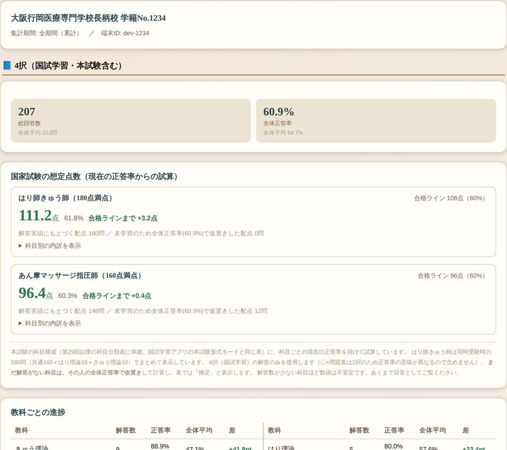
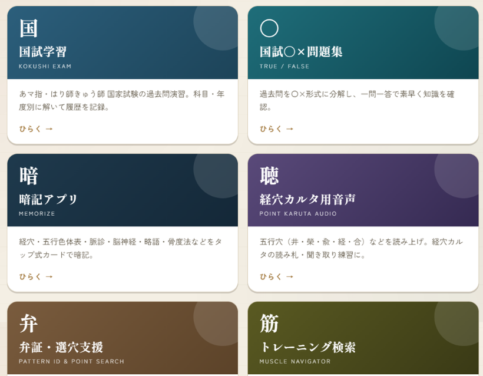
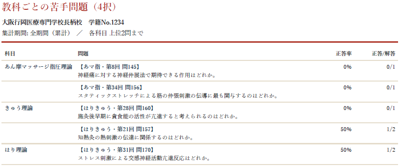
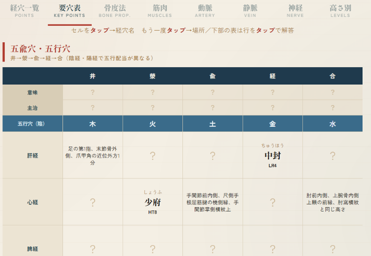
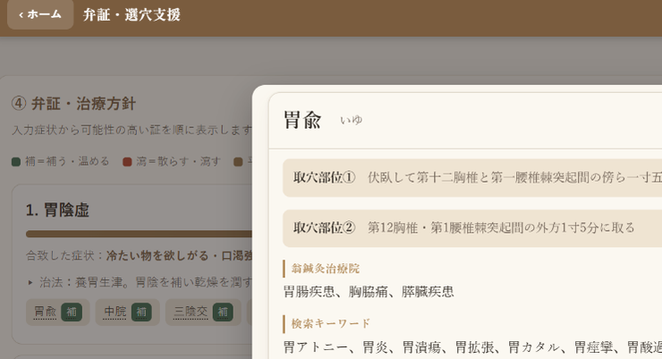
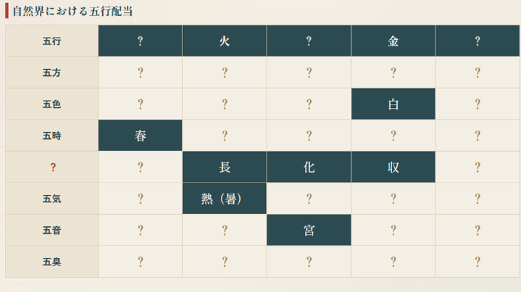
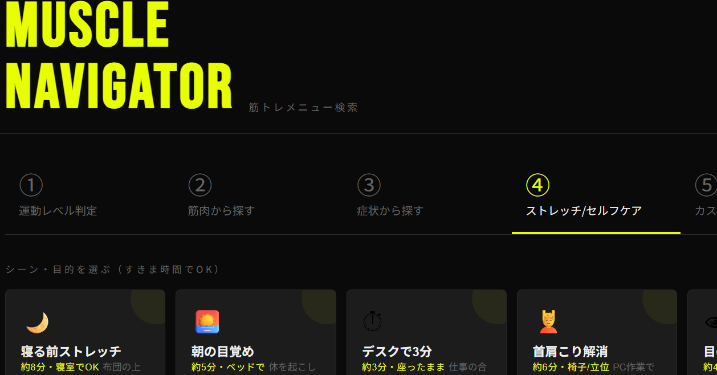

国家試験の過去問演習から、経穴の暗記、弁証・選穴の練習までを1つのホーム画面にまとめました。アプリのインストールは不要で、URLを開くだけで使えます。解いた記録は端末に残り、忘却曲線にもとづいて復習すべき問題が自動で出題されます。
| 内容 | A版 まずは試したい方へ・価格：無料 |
B版 本気で仕上げる方へ・価格：別途ご案内（買い切り） |
|---|---|---|
| 国試学習アプリ（4択）科目別・年度別の出題、間違えた問題だけの復習、問題ごとのメモ。 | 3,620問（10回分） | 12,080問（34回分） |
| 〇×問題集4択を選択肢ごとに分解した一問一答。すきま時間向け。 | 3,400問（10回分） | 9,280問（34回分） |
| 本試験形式モード本試験と同じ科目構成（はり師きゅう師180問／あマ指160問）で通して解答。 | ○ | ○ |
| 本試験専用問題本試験と同じ構成にまとめた一式。1回分＝1セット×1試験種別。 | 2回分第25-34回頻出問題 | 8回分第1-34回頻出問題／第25-34回頻出問題／新出題基準準拠問題①② |
| 期間限定模擬試験問題不定期に配信する模擬試験。実施後は成績を全体と比較できます。 | ― | ○不定期 |
| 経穴カルタ用音声五行穴などの読み上げ。カルタの読み札・聞き取り暗記に。 | ○ | ○ |
| 暗記アプリ経穴・五行色体表・脈診・脳神経・略語・骨度法をカードで暗記。 | ― | ○ |
| 選穴・弁証支援アプリ経穴検索、問診→弁証の鑑別→治療穴、徒手検査、カルテ作成。 | ― | ○ |
| 筋トレ・セルフケア検索運動レベルの判定、筋肉名や症状からメニュー提案。 | ― | ○ |
| 忘却曲線による自動復習・バックアップ復習すべき問題を自動で出題。記録はファイルに保存して機種変更時に移行。 | ○ | ○ |
| 成績表の提供想定点数／クラス内での位置／科目別の得意・不得意／学習の推移。アプリの画面では見られない情報です。 | ― | ○希望者・3〜6ヶ月に1回（PDF） |
ホーム画面に追加すると、アプリのように起動できます
登録しないとアプリは使えません
記録は自動で保存されます
B版の希望者のみ
B版は6つのアプリを1つのホームにまとめ、学習記録は端末に保存されます。忘却曲線にもとづき復習すべき問題が自動出題され、希望者には成績表（PDF）をお渡しします。以下は実際の画面例です。

アプリの画面では見られない、全体と比べた自分の位置が分かります。総合正答率／国家試験の想定点数（合格ラインとの差）を表示。科目別の正答率と全体平均との差、本試験モードの正答率の推移も収録。

6アプリをここから起動：国試学習／国試〇×問題集／暗記アプリ／経穴カルタ用音声／弁証・選穴支援／筋トレーニング検索。

各科目 上位1〜2問・【第〇回 問〇】つきで、苦手な問題をピンポイントに把握できます。

要点表・脈診・脳神経・略語などをカードで

問診→弁証→治療穴・経穴検索

表を丸ごと覚える項目に対応

症状・筋肉からメニュー提案